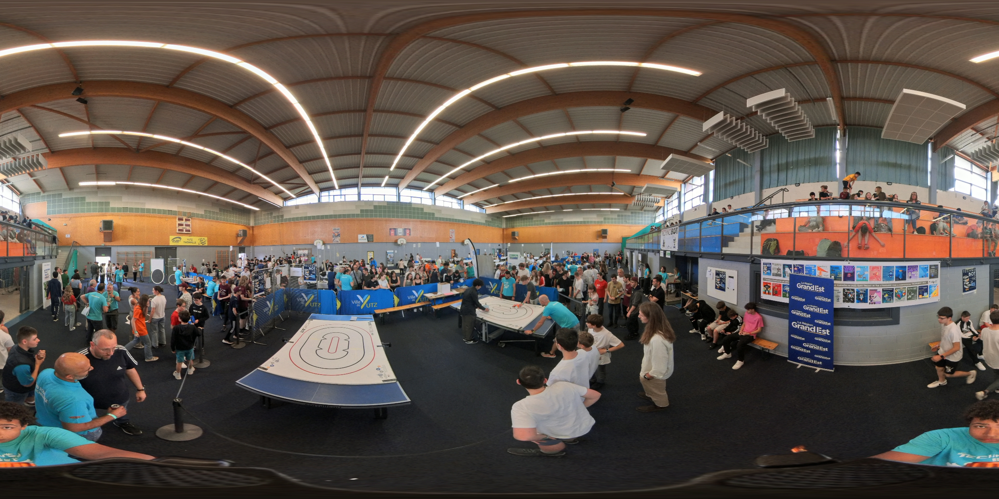

var zerod = 0;
var images = ["./Panoramas/o.jpg",
"./Panoramas/1.jpg"
]
function goNext() {
zerod = (zerod < images.length - 1) ? ++zerod : 0;
console.log(zerod)
$("#sky").attr("src", images[zerod])
}
function goBack() {
zerod = (zerod != 0) ? --zerod : images.length -1;
console.log(zerod)
$("#sky").attr("src", images[zerod])
};
.menu {
position: absolute;
bottom: 15px;
z-index: 2;
right: 15px;
}
.menu a {
display: block;
background: rgba(0, 0, 0, 0.35);
color: white;
padding-left: 5px;
padding-right: 5px;
padding-bottom: 5px;
padding-top: 5px;
text-decoration: none;
font-family: tahoma;
margin: 5px;
text-align: center;
cursor: pointer;
}
